BlueStore写入流程源码分析
一、准备工作
1、配置ceph.conf，防止osd_op_thread线程超时suicide
在ceph.conf文件的OSD组中添加字段osd_op_thread_suicide_timeout = 1800来调整osd_op_thread的自杀时间（单位秒），避免时间过短导致osd_op_thread影响调试
1 | //file:ceph.conf |
2、创建pool
1 | cd ./build |
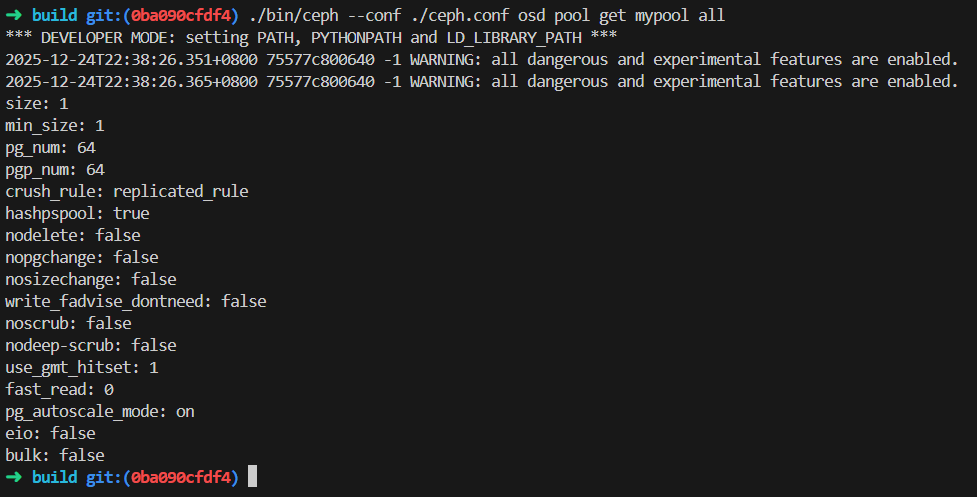
3、ceph之bufferlist
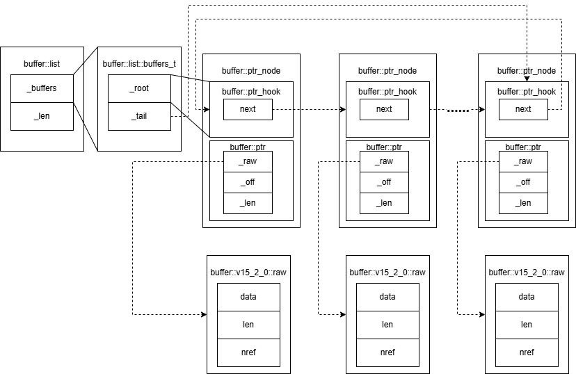
二、写入流程堆栈
通过如下命令向mypool写入对象my_first_object
1 | touch ./myoutput/hello_ceph.txt |
tp_osd_tp线程堆栈如下所示
1 | #0 BlueStore::queue_transactions (this=0x555558a95e00, ch=..., tls=std::vector of length 1, capacity 1 = {...}, op=..., handle=0x0) at /home/rebellion/clone/ceph/src/os/bluestore/BlueStore.cc:15665 |
OSD收到rados的写入请求后通过BlueStore::queue_transactions进行对象的写入。
该写入请求{“my_first_object”:”Hello Ceph Pool”}如下图所示的操作：
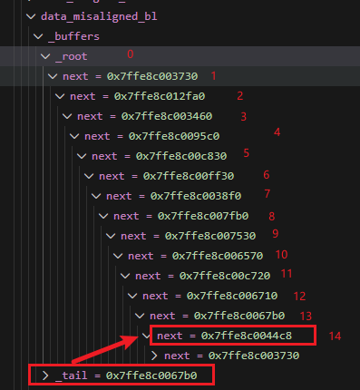
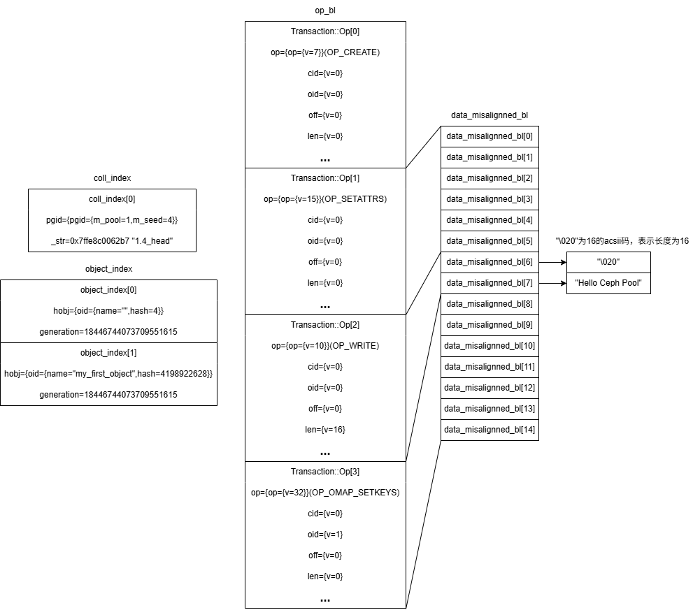
三、BlueStore::queue_transactions源码分析
BlueStore统一通过BlueStore::queue_transactions进行事务处理，写事务的处理流程如下所示：
将每个事务的on_applied、on_commit以及on_applied_sync回调函数分别加入到on_applied、on_commit以及on_applied_sync中
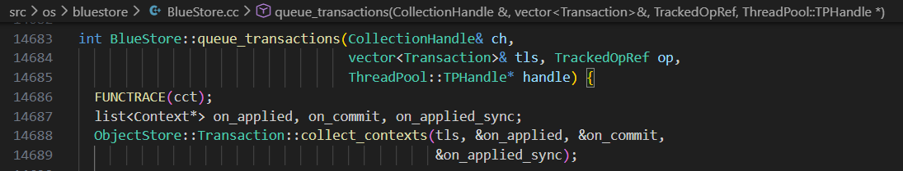根据CollectionHandle& ch参数获取Collection，通过Collection获取对应的OpSequencer
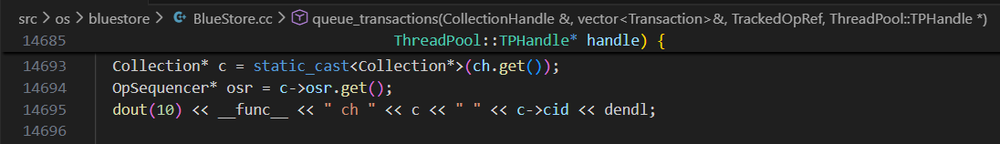创建一个TransContext* txc，TransContext表示一个关于事务组的状态机上下文
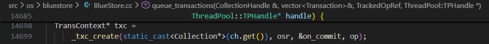txc_add_transaction对每个事务的元数据的查找或创建，接着对事务的操作类型调用相应的函数，Transaction::OP_WRITE调用BlueStore::_write函数执行异步DirectIO写入操作或者执行延迟写入
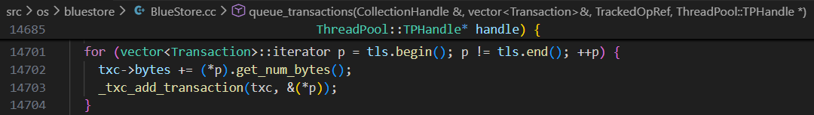_计算所有io的消耗，用于后续限流操作（写抑制），接着_txc_write_nodes将元数据更新操作加入RocksDB事务的WriteBatch中
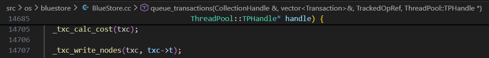若有延迟写入，则将该操作加入RocksDB事务的WriteBatch中
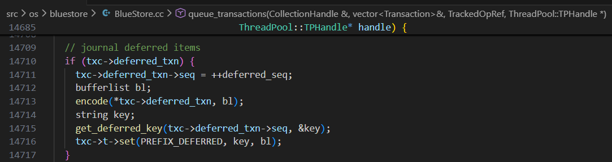更新空间分配（freelistmanager），删除失效的kv数据
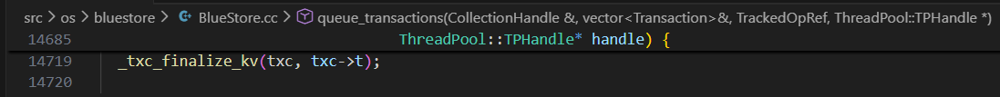执行限流操作
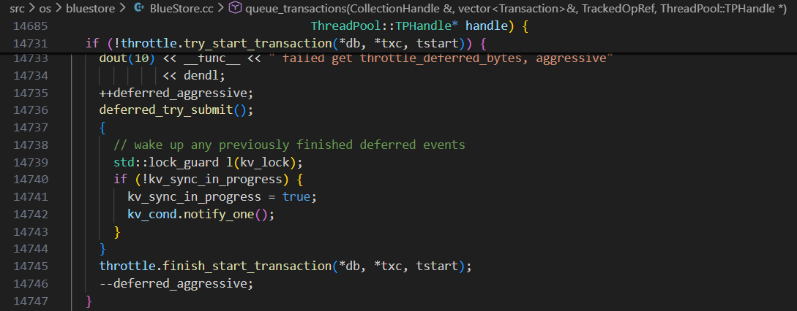_txc_state_proc执行txc对应状态的行为并进行状态转移，此时txc状态为STATE_PREPARE
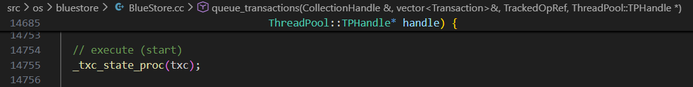
BlueStore::_txc_add_transaction
创建与事务objects数量相同的OnodeRef vector
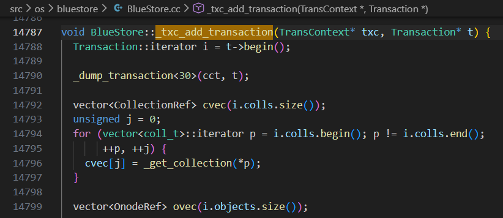通过op->oid获取ovec中对应的OnodeRef& o，若o为空则在事务对应的collection中查找
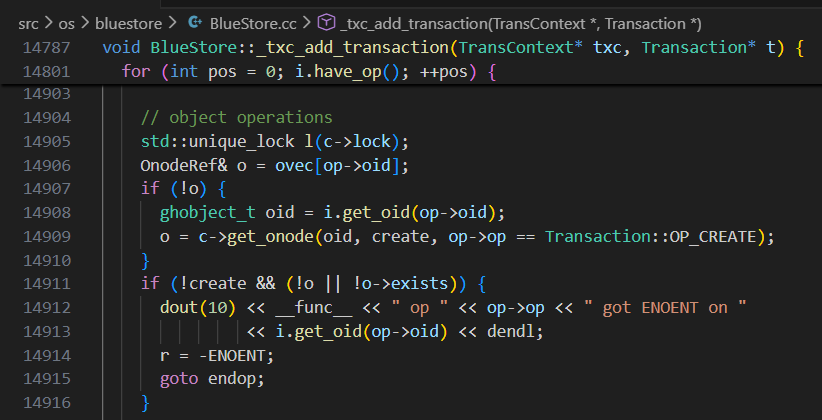根据op->op执行对应操作
 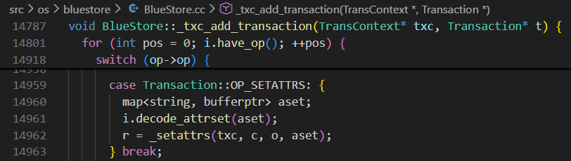
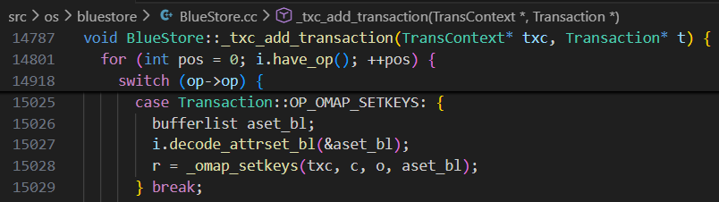
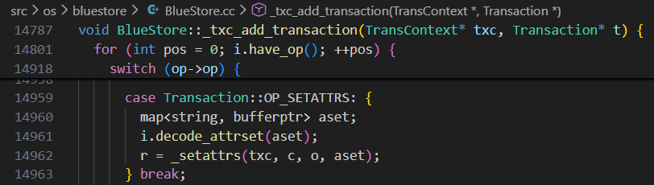
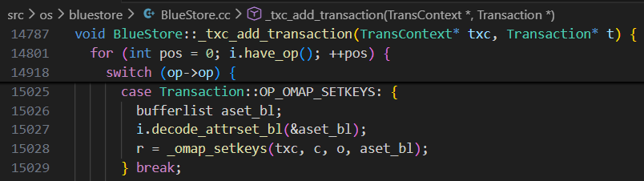
BlueStore::_write
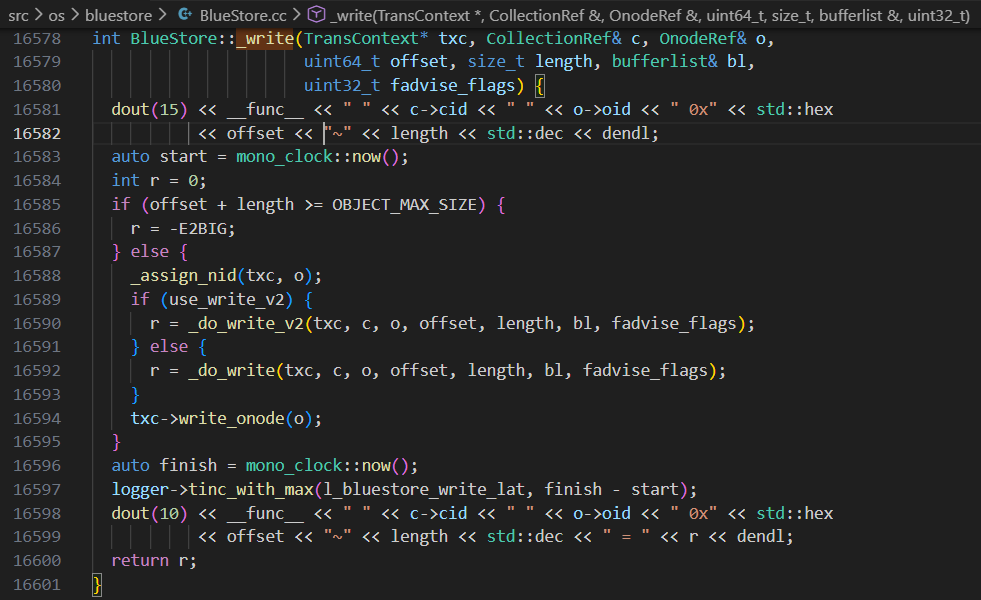 16585行判断写入数据是否超出对象最大长度；
16586行，若超出对象最大长度则返回-E2BIG；
16588~16594行，为onode分配nid，根据use_write_v2标志执行_do_write_v2或者_do_write，最后更新元数据；
BlueStore::_do_write
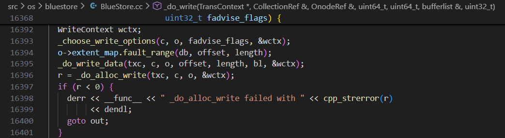16392行创建WriteContext wctx；
16393行设置写入选项，例如设置是否写入buffer、校验以及压缩选项等；
16394行加载涉及范围内的所有extent到extent_map中(主要针对开启分片功能情况)；
16395行调用_do_write_data，该函数根据blob情况执行aio_write、添加一个延迟写操作txc->deferred_txn_ops或向wctx->writes添加一个write_item；
16396行调用_do_alloc_write为wctx->writes分配空间并执行；
- 16411行调用_wctx_finish清空wctx->old_extents；
- 16435~16436行更新o->extent_map；
_do_write_data
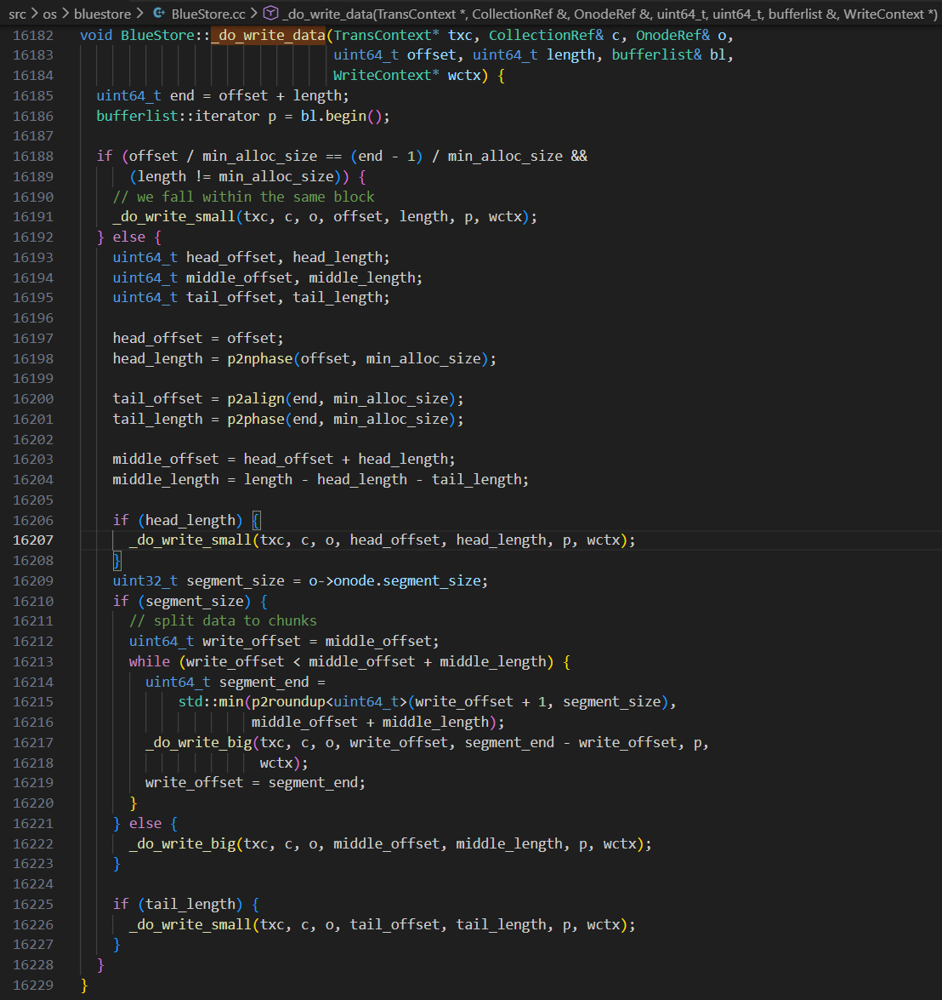如下图所示_do_writ_data根据 min_alloc_size 来切分 [offset, length] 的写，然后分别依据_do_write_small和 _do_write_big来处理
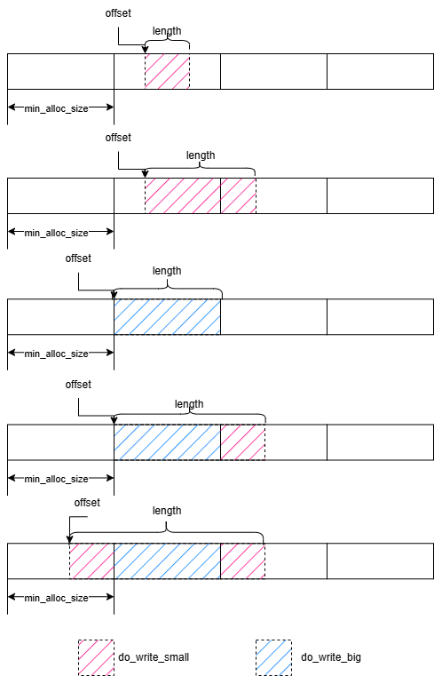
_do_write_small
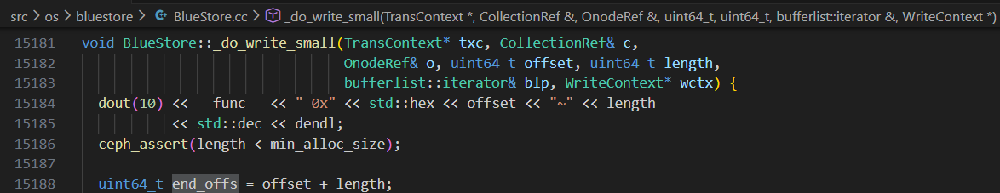 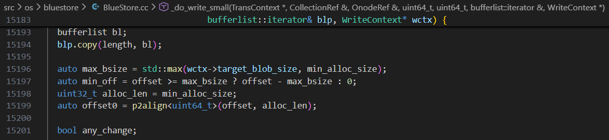- 定义后续过程所需的变量：
- end_offs为写入数据结尾处的偏移
- bufferlist bl为写入数据的副本
- max_bsize为wctx->target_blob_size和min_alloc_size之间的较大值，表示此次写入最大。min_alloc_size为最小分配单元，wctx->target_blob_size为min_alloc_size的整数倍，若开启压缩写则wctx->target_blob_size至少为2*min_alloc_size，否则为0。
- alloc_len为分配空间单元，其等于min_alloc_size
- offset0为offset对齐alloc_lenn之后的偏移
- any_change，该变量用于表示后续用于搜寻lextent的迭代器ep和prev_ep是否改变
15208行加载涉及范围[min_off, offset + max_bsize]的所有extent到extent_map中(主要针对开启分片功能情况)；
15211~15212行定义begin和end为o->extent_map.extent_map.begin()和o->extent_map.extent_map.end()；
15213行通过seek_lextent找到一个offset对应的lextent迭代器ep；
15214~15219行对ep进行调整；
15220~15224行定义prev_ep，该迭代器用于逆向搜索extent_map，若ep==begin则prev_ep==end跳过逆向搜索，否则prev_ep为ep前一个迭代器
[!NOTE]
- seek_lextent函数。struct Extent对比较运算符进行了重载，使用成员变量logical_offset进行比较
2
3
4
5
6
7
8
9
10
11
12
13
14
15
16
17
18
19
20
21
22
23
24
25
26
27
28
29
30
31
class BlueStore : public ObjectStore, public md_config_obs_t {
...
struct Extent : public ExtentBase {
uint32_t logical_offset = 0; ///< logical offset
uint32_t blob_offset = 0; ///< blob offset
uint32_t length = 0; ///< length
BlobRef blob; ///< the blob with our data
...
// comparators for intrusive_set
friend bool operator<(const Extent& a, const Extent& b) {
return a.logical_offset < b.logical_offset;
}
friend bool operator>(const Extent& a, const Extent& b) {
return a.logical_offset > b.logical_offset;
}
friend bool operator==(const Extent& a, const Extent& b) {
return a.logical_offset == b.logical_offset;
}
...
}
...
typedef boost::intrusive::set<Extent> extent_map_t;
...
struct ExtentMap {
...
extent_map_t extent_map;
...
}
...
}
seek_lextent调用lower_bound返回logic_offset第一个大于等于offset的lextent迭代器fp，代码4234~4239行调整fp，调整后的fp的情况如下所示： 1.offset大于
extent_map的所有lextent的logic_offset，则fp=extent_map.end()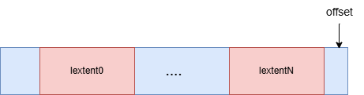
2.offset小于
extent_map的所有lextent的logic_offset，则fp=extent_map.begin()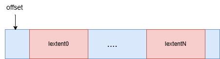
3.offset位于某个
extent_map的lextent的[logic_offset, logical_end()]，则fp指向该lextent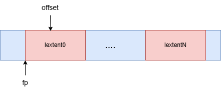
4.offset位于
extent_map的两个相邻的lextent1和lextent2之间，则fp指向该lextent2
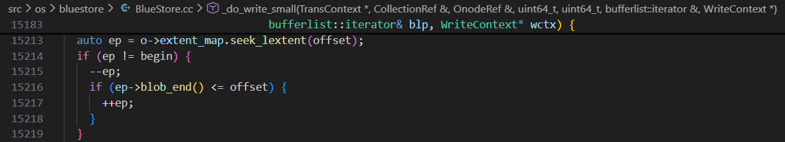
- ep的调整
seek_lextent获取到offset对应的lextent迭代器ep后在15214行~15219行对ep进行调整，该调整主要处理如下情况：
ep此时指向lextent2，且lextent1和lextent2共用一个Blob，此时会调整ep指向lextent1。
min_alloc_size、block_size和wctx->target_blob_size大小
下图为本机环境（存储设备为sumsang 980，1TB）运行时的min_alloc_size、block_size和wctx->target_blob_size变量的大小
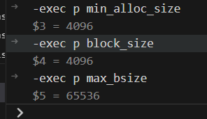
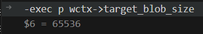


正向搜索lextent
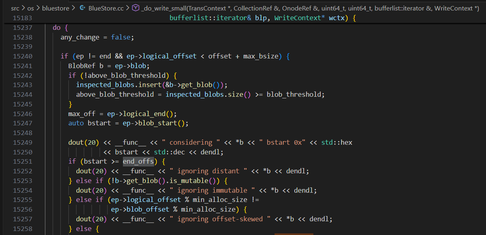 开始正向搜索lextent，15240行判断当前ep指向的lextent的logical_offset是否小于offset+max_bsize，若不满足则执行逆向搜索lextent，否则继续执行；
15246行~15247行，max_off为ep指向的lextent逻辑结束位置，bstart为ep指向的lextent在其所属的blob中的起始地址；
15251行~15258行，判断ep指向的lextent是否满足如下三个条件：
- blob中的起始地址小于写入数据的结束位置
- 该blob是可变的
ep->logical_offset%min_alloc_size=ep->blob_offset%min_alloc_size
若不满足上述三个条件则ep指向下一个lextent，继续循环；
否则继续执行else分支；
- 15259行获取blob的块大小。若开启了校验和则为block_size和1<csum_chunk_order中的较大值；否则为block_size;
- 15261~15263行定义head_pad、tail_pad。head_pad表示写入数据起始偏移在一个chunk_size中的头部填充大小，tail_pad表示写入数据结尾偏移在一个chunk_size中的尾部填充大小；
- 15264~15267行判断写入数据是否需要填充，若需要则加载涉及范围[offset-head_pad, end_offs-offset+head_pad+tail_pad]的所有extent到extent_map中(主要针对开启分片功能情况)；
- 15268~15274行判断头部填充与尾部填充是否有其他lextent使用，若有则将对应填充的大小设置为0；
- 15276~15277行定义b_off和b_len为写入数据在blob的中的起始偏移以及写入长度。
判断b_off和b_len是否满足如下4个条件：
- b_off和b_len与chunk_size对齐（对应15268~15269行和15272行的if判断为false时满足 ，即对应填充大小为0或者不存在使用该填充范围的lextent）；
- 该blob对应的物理磁盘长度大于等于写入数据在blob中的结束位置；
- 该blob在[b_off,b_len]对应的物理磁盘块区间未使用；
- 该blob在[b_off,b_len]对应的物理磁盘块区间已分配；
若满足上述条件则继续执行;
15284~15285行执行_buffer_cache_write写入缓存Cache;
15286行对头部和尾部进行zero填充；
15292行判断未启用bluestore_debug_omit_block_device_write则执行如下操作：
- 15293
15305行，若b_len<prefer_deferred_size（延迟写入大小阈值）则执行延迟写入，其中15296行创建bluestore_deferred_op_t* op；15297行设置该op的操作属性为bluestore_deferred_op_t::OP_WRITE；1529815303行执行bluestore_blob_t::map；15304行设置op的数据指向bl； - 15305
15310行，若b_len>prefer_deferred_size（延迟写入大小阈值），其中1530615309行执行bluestore_blob_t::map_bl;
[!NOTE]
bluestore_blob_t::map
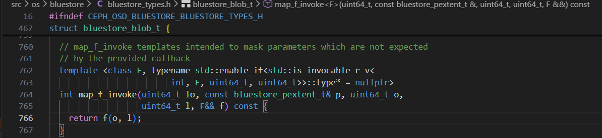 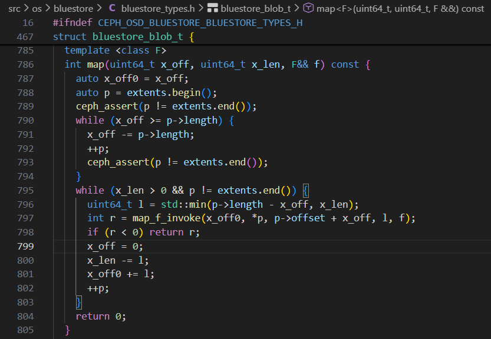- 787~794行定位写入数据的起始偏移所在的pextent（物理extent），p为指向该pextent的迭代器；
- 795~803行对每个受写入数据影响的pextent执行函数f（传入的函数指针），_do_write_small传入的函数如下：
1
2
3[&](uint64_t offset, uint64_t length) {
op->extents.emplace_back(bluestore_pextent_t(offset, length));
return 0; 即将受本次写入影响的pextent的受影响区域以struct bluestore_pextent_t（如下图所示，该结构体表示物理磁盘上一段连续的空间，其中offset表示该空间起始处的偏移，length表示该空间的长度）的形式加入op->extents；
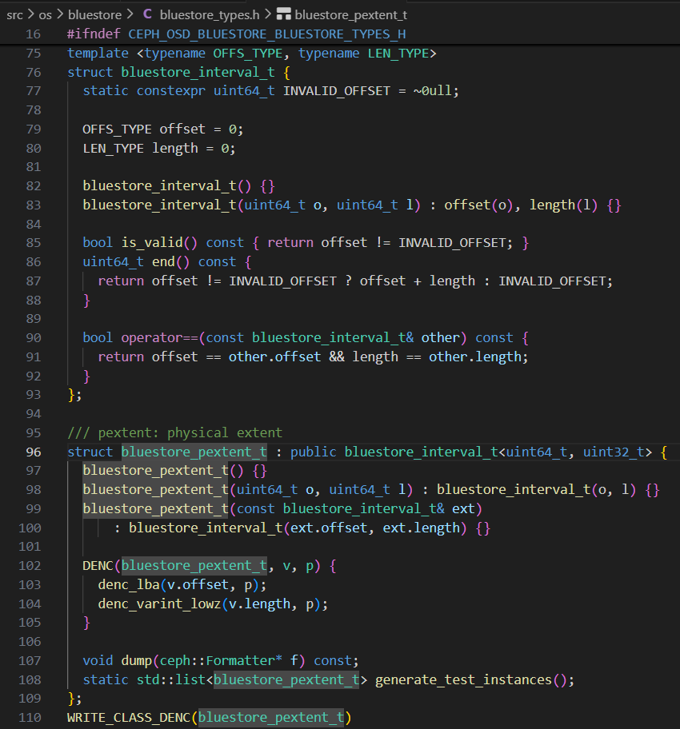
bluestore_blob_t::map_bl
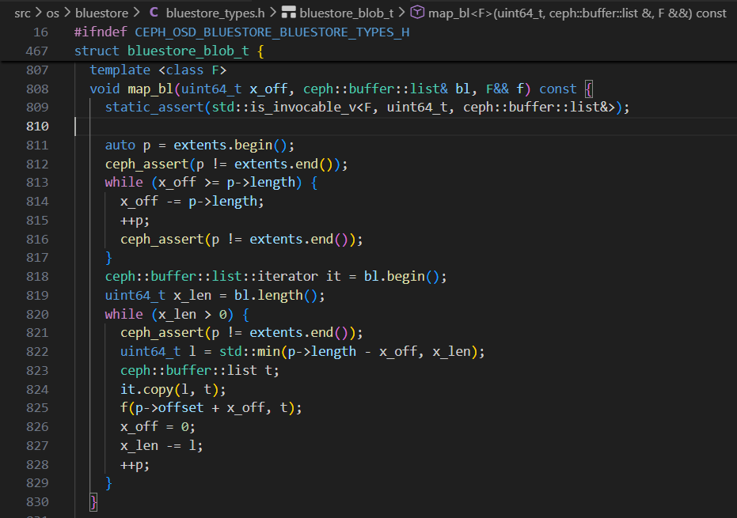- 811~817行定位写入数据的起始偏移所在的pextent（物理extent），p为指向该pextent的迭代器；
- 818~829行对写入数据和其对应的pextent执行参数f指向的函数，其中传入的f如下：
1
2
3[&](uint64_t offset, bufferlist& t) {
bdev->aio_write(offset, t, &txc->ioc, wctx->buffered);
} 即将写入数据异步写入到该数据对应的pextent所表示的物理磁盘空间中。
Onode、lextent、Blob、pextent之间的关系
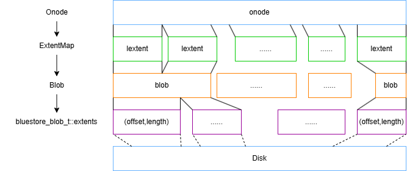
- 15293
15312行计算写入数据的校验和；
15314行通过set_lextent函数分配新的lextent并将blob中[b_off+head_pad,b_off+head_pad+length]的部分分配给该lextent使用；
15316行标记该blob中[b_off+head_pad,b_off+head_pad+length]的部分为已使用。
逆向搜索lextent